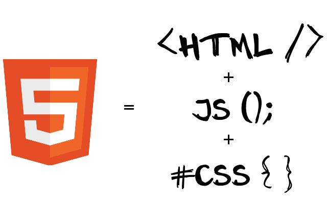

<!DOCTYPE html>
Módulo 1: Introducción a HTML5

Julian Alessandro
Matias Alvarez Duran
Octubre, 2014
Agenda
- Que es HTML5?
- Features
- State of the Art
- Evolución
- Doctypes
- XHTML
- Modernizer
Que es HTML5?

Que es HTML5?
<!DOCTYPE html
PUBLIC "-//W3C//DTD XHTML 1.0 Strict//EN"
"http://www.w3.org/TR/xhtml1/DTD/xhtml1-strict.dtd">
<html>
<head>
<title>Old HTML ¬¬</title>
</head>
<body> ... </body>
</html>
<!DOCTYPE html>
<html>
<head>
<title>HTML5</title>
</head>
<body> ... </body>
</html>
Con solo cambiar el DOCTYPE, actualizamos a HTML5 !!!
Features
- Offline
- Application Cache, Local Storage, Web SQL, Indexed DB, Online/Offline events
- Storage
- File Access API
- Connectivity
- WebSockets, Server-Sent Events
- File Access
- Native Drag & Drop, Dragging Files
Features
- Semantics
- Form Fields, Microdata, Semantic Markup
- Multimedia
- Audio, Video
- 3D / Graphics
- 2D Canvas, WebGL, SVG, 3D CSS transforms, and SMIL
- Presentation
- 2D Transformations, Transitions, 3D Transforms and WebFonts
State of The Art
Evolución
Doctypes
Los navegadores tienen varios motores de renderización.
Esto les permite renderizar:
- Contenido HTML5
- Contenido con versiones antiguas de HTML
Los 'Doctypes' activan cada motor según corresponda.
Doctypes - Tipos
- Quirks Mode
- Se ignora el formato contemporaneo de la Web para poder renderizar paginas hechas en los 90’s
- Standards Mode
- Los documentos son manejados utilizando los últimos standards que contiene el navegador. En HTML5 este modo se llama “Sin quirks”
- Almost Standards Mode
- Se creó para tratar una particularidad en el manejo de las tablas en CSS2 en los navegadores modernos (Firefox, Safari, Chrome, Opera (since 7.5) e IE8)
Doctypes - Efectos
La utilización de uno u otro modo puede afectar de diferentes maneras el renderizado:
- Layout
- Parsing
- Scripting
XHTML
- Después de HTML 4.01 se incorporó la rigurosidad de XML
- Los browsers no debían tratar de arreglar los errores de estructura, debían fallar
- Más del 90% de las páginas, tienen errores de marcado
- SE VOLVIO IMPOSIBLE MIGRAR!!!
- Nació HTML5
Modernizer
- Pequeña librería JavaScript que utiliza la técnica llamada 'Feature Detection'.
- Detecta si el browser posee implementaciones nativas de tecnologías modernas.
- User Agent sniffing
- Feature Detection
Modernizer - Funcionamiento
- Testea más de 40 features modernos
- Crea un objeto JavaScript que contiene los resultados de los tests
- Permite crear los nuevos elementos de HTML5, actualizando browsers antiguos
- Provee un script loader para cargar polyfills
Modernizer - Polyfills
A piece of code that provides the technology that you, the developer, expect the browser to provide natively.
http://remysharp.com/2010/10/08/what-is-a-polyfill/
Modernizer - Loader
Modernizr.load({
test: Modernizr.geolocation,
yep : 'geo.js',
nope: 'geo-polyfill.js'
});
- Evita la descarga innecesaria de librerías
- Modernizr.load puede cargar scripts asincrónicamente o en paralelo
Recursos y Ejemplos
Modernizer: http://modernizr.com/docs/#installing
Polyfills:
https://github.com/Modernizr/Modernizr/wiki/HTML5-Cross-browser-Polyfills
Web Sockets:
Musica Colaborativa:
http://labs.dinahmoe.com/plink/#
Paint:
http://paintwith.me/
http://connorhd.co.uk/project/pixelatr/
Multimedia:
Audio:
http://www.html5rocks.com/en/tutorials/webaudio/games/
CSS3 Filter Effects:
http://html5-demos.appspot.com/static/css/filters/index.html
Video:
http://www.html5rocks.com/en/tutorials/getusermedia/intro/
Recursos y Ejemplos
WebGL (Canvas 3D):
http://disc.uncontrol.com/
http://www.satine.org/research/webkit/snowleopard/snowstack.html
Canvas 3D con Video:
http://craftymind.com/factory/html5video/CanvasVideo.html
Presentations:
ImpressJS:
http://bartaz.github.com/impress.js/#/bored
Deck JS:
http://imakewebthings.com/deck.js/
Reveal JS:
http://lab.hakim.se/reveal-js
HTML5 en YouTube:
http://www.youtube.com/html5